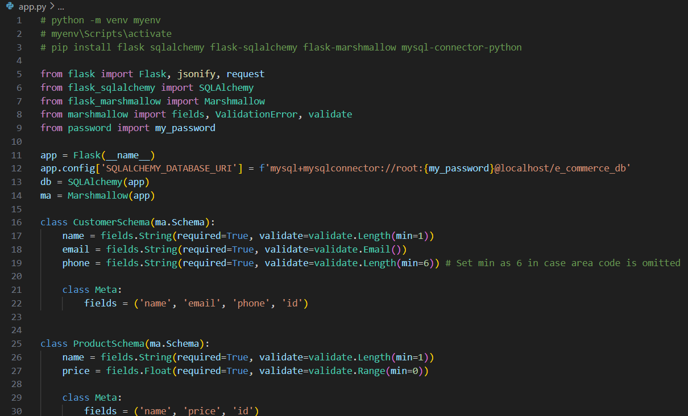
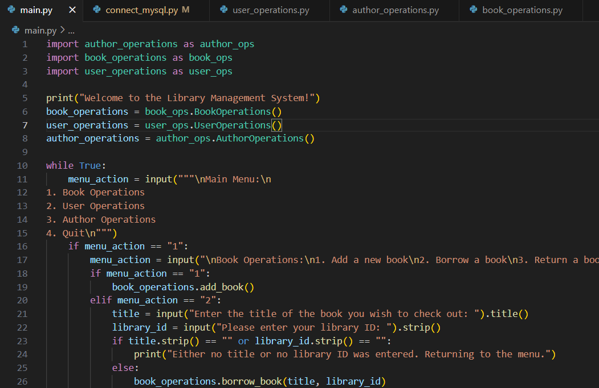

I created an E-Commerce API using Python, JSON, Postman, Flask, SQLAlchemy, and Marshmallow.
This is an E-Commerce API that is able to keep track of customers, customer accounts, orders, and products through the use of flask, MySQL, JSON, SQLAlchemy, Marshmallow, and Postman.
The schemas for each section are created at the beginning of the code, and they are instantiated. Then the tables are created with various links, connecting customers to their accounts, customers to their orders, and products to the orders.
Customer Management: You can pull all of the customers or search for a customer individually by their unique ID. Customers can also be added, updated, or deleted from the database.
Customer Account Management: You can create a customer account (which links it to an existing customer), get a customer account which pulls the account as well as the customer's information, update an account, or delete an account.
Order Management: You can use the application to pull all of the existing orders, add orders, update orders, and delete orders. Within the orders you have to use a list when inputting the product_ids for adding and updating orders, allowing each order to contain multiple products.
Product Management: You can add, update, view, and delete products from the database. There is an additional feature that allows you to search for products by name or part of the name.
Using Python to leverage SQL, I created a Library Management System.
This Library Managment System uses Python to manage a library database out of MySQL. It has three main parts:
Book Operations: Where you are able to add a new book to the library, borrow a book under an existing user, return a book, search for a book, and display all books.
User Operations: You can create a new user, view a specific user's details, and display all users.
Author Operations: You can add a new author, view a specific author's details, and display all authors.
Using regex in Python, I created a Contact Management System with capabilities of exporting/importing contact information on a text file.